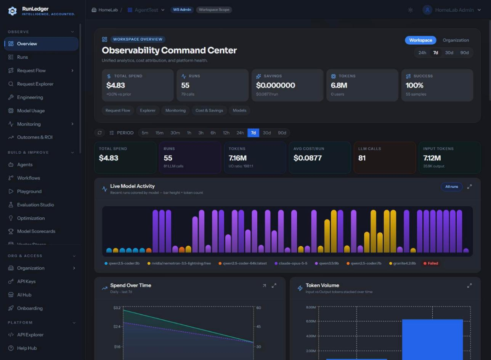

A wide control plane whose enforcement path hasn't caught up with its surface area
RunLedger has an unusually broad product surface for a single-maintainer codebase: about 100 UI routes, 636 API endpoints, a Rust data plane and nine optimization sidecars. The observability and gateway core is real and works on live traffic. But several headline promises (budget enforcement, tool governance, workflow-centric attribution, intelligent routing) are advisory, disconnected or broken in the runtime path. A large share of recent engineering went into cross-linking "posture" cards instead of deepening those paths.
Verdict
- Ingests real traffic: 275,912 runs and about 2M spans on the home lab via OTLP, the gateway and the SDK.
- Credible OpenAI-compatible gateway with routing groups, fallback triggers, canary/rollout/rollback policies, exact and semantic cache, and pre/post guardrails that are actually evaluated in the hot path.
- Serious breadth in FinOps primitives: billing periods, reconciliation, signed exports, chargeback rules, shared-cost allocation, adjustments, HMAC-signed ledger snapshots.
- Enterprise table stakes are present: OIDC, OAuth2, LDAP, IP ACLs, audit log, access groups, retention model, HA/backup docs, Helm.
- Disciplined backend hygiene: ruff, mypy and pytest in CI, 637 API tests, 78 Alembic migrations, typed Pydantic schemas throughout.
- Budgets aren't enforced inline.
check_budgets()is never called from the gateway preflight, even though the docs say "Inline (gateway): blocking, enforced before the provider call". - Model budgets are dead. Their spend counter (
incr_model_budget_spend) and check (check_model_budgets) are never called. - Tool policies and approvals are advisory. They only apply if a client voluntarily calls
/policies/checkor an MCP tool. - Intelligent routing is broken in production. The API calls
gateway-rs/classify, which returns 404, and silently fails open after a timeout of up to 25 s. - "Workflow" isn't a dimension on runs.
agent_runshas noworkflow_id. Workflows are a separate registry with manually posted run records and their own cost columns. - Most production runs are noise. About 92% of production runs are Codex app spans with $0 cost and no model calls. The FinOps numbers aren't trustworthy on this dataset.
Stage call: late alpha / early beta on the control-plane side; early alpha on enforcement. The product is observably complete but not yet enforceably complete. The fastest path to a defensible product is to stop widening, collapse the posture layer, and make five runtime paths real: budgets, tool policy, approvals, workflow attribution and routing.
By the numbers
routers/analytics.py: one file, 159 endpoints
$0.000000 to six decimal places.Maturity scorecard
| Area | Surface | Runtime | Cohesion | Overall | One-line read |
|---|---|---|---|---|---|
| Ingest & instrumentation | 9 | 7 | 5 | 6.8 | Many paths; OTLP accepts everything as a "run", which pollutes the data. |
| Observe | 9 | n/a | 6 | 7.0 | Rich, visually strong; too many overlapping pages; inconsistent KPIs. |
| Gateway & routing | 8 | 6 | 5 | 6.2 | Real hot path in Python; the Rust plane is a thin orchestrator; intelligent routing is broken. |
| Safety & governance | 8 | 4 | 5 | 5.2 | Guardrails enforced; tool policy and approvals are cooperative only. |
| FinOps | 9 | 3 | 4 | 5.0 | Excellent accounting surfaces; four budget concepts; no inline budget enforcement. |
| Build & improve | 8 | 3 | 3 | 4.2 | Registries and record-keeping; no execution; duplicate dataset/experiment systems. |
| Org & access | 8 | 7 | 6 | 6.8 | SSO/LDAP/ACL present; UI acts as a workspace API key, not as the user. |
| Platform & ops | 7 | 6 | 6 | 6.0 | HA/backup/Helm docs; production runs in development mode with backups off. |
| Engineering quality | Backend good · Frontend weak · Monolith files | 5.5 | No UI tests, 4,915-line page, 39 native confirm(), 4 aria-labels. | ||
Top 12 findings
| # | Severity | Finding | Evidence | Fix |
|---|---|---|---|---|
| 1 | Critical | Workspace budgets aren't enforced in the gateway. Docs and README say they are. | check_budgets is only called from routers/budgets.py:826 (/budgets/check) and services/policies.py:269. The gateway preflight (routers/gateway_runtime.py) calls only check_cost_cap (route-level) and check_per_user_rpm. | Call check_budgets in preflight (Redis counters already exist) and honor block/downgrade. Add a contract test. |
| 2 | Critical | Model budgets are fully decorative: CRUD and UI, but nothing increments or checks them. | incr_model_budget_spend and check_model_budgets have zero call sites. | Fold into one budget scope type (scope_type=model) and delete the separate entity. |
| 3 | Critical | Intelligent routing silently fails in production. | services/intelligent_router.py posts to ${ROUTER_SVC_URL}/classify, which is set to gateway-rs. gateway-rs registers only /health/* and /gateway/chat/completions. Live probe: POST :8210/classify → 404. router-svc isn't deployed. The timeout is 25 s. | Implement /classify in Rust or redeploy router-svc. Cut the timeout to about 300 ms. Emit a metric and UI badge when routing fails open. |
| 4 | High | "Workflow-centric" product with no workflow dimension on runs. | agent_runs columns: no workflow_id. WorkflowRun is a separate table with its own total_cost and total_tokens, created by POST /workflows/{id}/runs with no execution and no link to agent_runs. | Add workflow_id (resolved from feature_tag, header or OTLP attribute) to agent_runs. Make WorkflowRun a view over runs. Budgets, analytics and evals scope by workflow. |
| 5 | High | Tool policies and approvals don't gate tool calls the model emits through the gateway. | ToolPolicy appears in no gateway service. Enforcement only via /policies/check, runledger_policy_check and runledger_filter_mcp_tool MCP tools. | Filter the tools[] request and inspect tool_calls in the response inside the preflight/finalize path. Approvals become a gateway "hold" state. |
| 6 | High | OTLP ingestion turns every trace into an AgentRun, including non-LLM application spans. | 253,163 OTLP runs have zero provider calls. Top span names are fs.get_metadata, receiving, handle_responses. Total cost is $9.71 on 74.6M tokens. otlp_spans_raw is 1.7 GB. | Only create a run when a trace contains gen_ai.* / OpenInference LLM spans. Per-source drop rules. Default retention policy. |
| 7 | High | Posture-card sprawl: 68 endpoints, 121 UI fetchers and 83 examples that cross-link features instead of deepening them. | See section. The Gateway page alone makes 35 API calls (23 posture) and is 4,915 lines. | Replace with one /context?entity=&id= relationship endpoint and a shared "Related" side panel. |
| 8 | High | The dashboard authenticates to the API as a workspace API key held in the browser session. | session.apiKey is used in 31 client files. The NextAuth JWT lives 30 days. Roles are cached in the JWT. | Use a backend-for-frontend proxy with an httpOnly session and short-lived user tokens. Audit as the user, not as the key. |
| 9 | High | The Rust "data plane" depends on synchronous Python hops for every request. (Corrected in pass 2: OpenAI-compatible providers are called directly from Rust; only Azure, Bedrock, Vertex and Gemini are proxied through Python.) | Every request does preflight → route-result → finalize → mirror → events against the Python API, about 40 SQL queries before the first byte. call_provider_execute is used for the python_adapter providers. Only chat completions is supported. | Cache the runtime snapshot in Rust, move caps and RPM to Redis, make finalize and mirror async. Add /embeddings, /responses and /messages. |
| 10 | Medium | Four overlapping budget concepts plus a route cost cap. | Budgets, Model budgets, Budget tiers (API-key RPM/cost), Budget overrides, plus daily/monthly_cost_limit_usd on routes. | One Budget entity with scope (workspace / workflow / api_key / model / access_group / route) and actions (alert / downgrade / block). |
| 11 | Medium | Production instance runs ENVIRONMENT=development: SQL echo floods logs, the default DB password is in use, backups are disabled. | core/db.py:14 echo=settings.is_development. Container env shows DATABASE_URL=…runledger:runledger@… and BACKUP_ENABLED=false. | A production profile that refuses to boot on default secrets. Make echo opt-in only. |
| 12 | Medium | Pagination is missing on 92 of 125 collection endpoints, using four different styles. | See pagination audit. The runs cursor is a bare timestamp, so runs with the same timestamp can be skipped. | One cursor standard (started_at,id), a {items,next_cursor,total?} envelope and a shared <DataTable>. |
Architecture: request path reality vs. the diagram
The docs describe a Rust data plane with the Python API "out of band". In code, every control decision goes through the Python control plane over HTTP, authenticated with the shared x-admin-secret. For OpenAI-compatible providers Rust makes the upstream call itself; Azure, Bedrock, Vertex and Gemini are also proxied through Python. See pass 2 lifecycle.
Latency claim
The login page advertises "<5ms" gateway overhead. With 4–5 synchronous internal HTTP hops, a Postgres SUM() over gateway_requests per request for cost caps, and optional sidecar calls, that claim can't hold. No benchmark in scripts/bench asserts it.
Blast radius
If the Python API is slow or down, the "data plane" is down too: readiness probes /health/live on the control plane. The gateway can't serve from a cached snapshot, although /runtime/internal/snapshot already exists.
Coverage
The Rust plane implements only /gateway/chat/completions. Embeddings, Responses API, Anthropic Messages, images, audio and batch aren't routed. Bedrock streams are fully buffered before being returned.
Other architectural observations
- Monolithic routers.
analytics.py(634 KB, about 8,500+ lines) mixes core analytics, economics, engineering, scorecards and 68 posture endpoints.org.pyis 60 KB,runs.py62 KB. These are merge-conflict magnets and untestable as units. - Tenant isolation by convention. 1,633 explicit
workspace_id ==filters across routers and no Postgres RLS. One missing filter is a cross-tenant leak. Consider RLS withSET app.workspace_idper request as defense in depth. - Sidecar sprawl. 26 compose services. The home lab runs about 33 RunLedger containers (Letta, Kùzu, Qdrant, memory-db, Redpanda, MinIO…) for a product with 14 users. A "core" profile of api + web + worker + postgres + redis should be the default story.
- Dead and legacy code still shipped.
routers/projects.pyisn't mounted but its model and schema remain.team_modelsis still referenced byservices/gateway.pyandgateway_controls.py.gateway_legacyis mounted. 27 page routes are redirect stubs.
Posture-card sprawl
TODO_ITEMS/FEATURE-STATUS.md tracks a "cohesion matrix" (every feature × every other feature) and closes cells by adding a posture endpoint + colored card, for example "WU-016 adds Runtime Scope & Evidence posture card (cyan theme)… 5 cells closed". Cohesion is being measured by links between screens, not by shared runtime behavior./overview-gateway-posture, /tags-runtime-posture, /vector-store-detail-evidence-posture…)Why it matters
- Cost. Each card is one more round trip and about 8–12
COUNT(*)queries per page load. On a 275k-run workspace that's real Postgres load for "context" tiles. - Cognitive load. Every page ends in the same grid of violet / amber / emerald / cyan / rose summary cards, so the page's primary job gets buried and screens look alike.
- False completion signal. A cell going from PARTIAL to STRONG because a card links to Budgets doesn't mean budgets constrain that feature. Finding #1 is proof: Budgets is "STRONG" across the board yet unenforced.
- Violates the repo's own AGENTS.md. "Reject or refactor changes that introduce decorative configuration… or UI surfaces with no real enforcement path."
Recommended replacement
One relationship service: GET /context?entity=workflow&id=… returns the related budgets, routes, policies, keys, recent runs and violations as typed edges. Add one reusable <RelatedPanel> (right-hand drawer), lazy-loaded on open. Delete the 68 endpoints, 121 fetchers and 83 examples. Expect about 10–15k LOC removed and a measurable drop in page load time.
Data model & scale
| Concern | Observation | Recommendation |
|---|---|---|
| Core entity | AgentRun → Span → ProviderCall/ToolCall → Outcome is sound. Runs carry feature_tag, api_key_id, end_user_id, session_id, intent, but not workflow_id, model (derived from calls) or a denormalized total_tokens. | Add workflow_id and a primary model. Index (workspace_id, workflow_id, started_at DESC, id). |
| Raw telemetry | otlp_spans_raw 1.97M rows / 1.7 GB, spans 1.99M / 772 MB, no partitioning, 0 retention policies configured in production. | Monthly range partitioning on spans and raw. A default 14-day raw / 90-day normalized retention. Optional ClickHouse sink for analytics. |
| Rollups | usage_hourly has only 446 rows, so most analytics still aggregate raw tables per request. | Materialize hourly/daily rollups by (workspace, workflow, model, key) and serve all charts from them. |
| Pricing | 28 rows in provider_pricing. Unknown or local models resolve to $0 silently. | Flag "unpriced" calls explicitly in the UI. Ship a LiteLLM-style price map and a "local = $0 by policy" toggle. |
| Parallel ledgers | WorkflowRun.total_cost, GatewayRequest tokens (used for cost caps), agent_runs.total_cost_usd, and Redis budget counters are four sources of truth for spend. | One metering stream (agent_runs/provider_calls). Everything else reads from it. |
Feature by feature
1 · Ingest & instrumentation
OTLP / OpenInference ingest
Partialrouters/otlp.py · services/otlp_parse.py · workers/otlp_finalize.pyWorks
- Collector → API, batch tracking (59,839 batches)
- Phase 2/4 parsing tests, insights and stats endpoints
- Trace stitching into runs and spans
Gaps
- No LLM-span gating, so app spans become runs (92% noise in prod)
- Codex/Claude Code token usage not priced ($0)
- No sampling or drop rules per source
Enhance
- Source profiles (Codex, Claude Code, LangGraph) with attribute maps
- "Unpriced tokens" KPI
- Ingest health page showing drop / accept ratios
Python & TypeScript SDKs
Functionalpackages/sdk · packages/ts-sdkWorks
- Both SDKs tested in CI (pytest, vitest)
- Run/span/outcome recording
Gaps
- No first-class
workflow=parameter tied to a workflow entity - Budget/policy pre-check is opt-in, which is the only way budgets bite today
Enhance
- Decorator
@runledger.workflow("name") - Publish to PyPI/npm with semver aligned to API
MCP server (control plane for desktop agents)
Functionalmcp_server.py mounted at /mcpWorks
- Budget, policy, record-run/span/tool, query costs and optimizations tools
- Recent fixes: per-client API key, session timeouts
Gaps
POST /mcpreturns 307 to/mcp/; some clients don't follow POST redirects (a LAN client logged 404s)- Advisory only: the agent decides whether to obey
Enhance
- Serve both
/mcpand/mcp/ - A "compliance score" per client (did it call check-before-spend?)
Claude Code log ingestion (WIP on this branch)
In progressservices/claude_code_logs.py · tests/test_claude_code_logs.py (uncommitted)Good direction: it addresses exactly the Codex/Claude Code "$0, no model call" problem. Make sure it lands alongside the OTLP gating in finding #6, otherwise it adds another source of noise-runs.
Webhook ingest, Kafka/Redpanda export
Functionalrouters/ingest.py · services/kafka_export.pySigned ingest (INGEST_SIGNING_SECRET, which falls back to the admin secret; separate them). Kafka export configs are unpaginated. Redpanda + Console run continuously in the home lab for an optional feature; put them behind a profile.
2 · Observe
Analytics overview: "Observability Command Center"
Functional/analytics · components/dashboard/AnalyticsBreakdownClient.tsx (65 KB)Works
- Workspace / Org / Platform scope switch, 5m→90d windows
- Live model activity bars, spend over time, token volume, model donut
- Chart export buttons
Gaps
- Two KPI strips disagree for the same window (tokens 6.8M vs 7.16M, calls 79 vs 81): two code paths compute "the same" number
- Two period pickers on one page (24h/7d/30d/90d and 5m…90d)
- "Failed to load analytics" toast when browser→API calls fail (build-time
NEXT_PUBLIC_API_URL/ CORS); the page should degrade per-card, not with a global toast - Currency shown to six decimals (
$0.000000); "0 users" when end_user_id isn't sent - Spend-over-time with 2 points renders as a misleading straight slope
Enhance
- One metrics service feeding every KPI tile
- Smart currency formatting (<$0.01 → "<1¢")
- Workflow as the default top-level grouping
- Saved views and shareable URLs (all filters in query string)
Runs list & run detail
Functional/runs · /runs/[run_id] · routers/runs.pyWorks
- Rich filters: status, feature_tag, end user, model, cost range, access group, key, tag, tool, security-only
- Cursor pagination (
RunsPaginated.tsx) - DAG view (xyflow + dagre), span detail panel
Gaps
- Cursor = bare ISO timestamp, so runs with the same timestamp are skipped or duplicated
- A
COUNT(*)with all filters on each page load, slow at 250k+ rows - No workflow filter (dimension missing);
searchis only a run-ID prefix - Run detail fires 10 API calls, 4 of them posture
Enhance
(started_at,id)keyset cursor; approximate counts- Full-text search over prompt/response (opt-in capture)
- Side-by-side run diff; "replay this run" button wired to Replay
- Column chooser and CSV export of the current filter
Sessions
Functional/sessions · /sessions/[id] (not in sidebar)Works with page/page_size, a different pagination style from Runs. Not reachable from the sidebar (only via links). The project's own status file marks the backend PARTIAL. Recommend: merge into Runs as a "group by session" toggle.
Request Flow (Sankey), Focus, Live Pipeline
Functional/request-flow · /request-flow/focus · /request-flow/live · RequestFlowSankey.tsx (49 KB)Works
- Showcase-quality visual: request → route → provider → outcome
- Multiple modes and metrics; PNG/SVG download
Gaps
/runs/flow?scope=platformreturns 403 for non-platform roles, but the toggle is still shown- Hard limit=500 rows; no "truncated" indicator
Enhance
- Hide scopes the role can't use
- Click a band to jump to a filtered Runs list
Request Explorer
Functional/request-explorer · 762 linesOverlaps heavily with Runs (both are filterable request lists). Recommend collapsing into Runs with a "gateway requests" lens, keeping one list UX.
Engineering · Model Usage · Model Scorecards · Monitoring · Telemetry
Functional/engineering · /model-usage · /model-scorecards · /monitoring · /monitoring/telemetryWorks
- Latency/error metrics, per-model usage and budget utilization, scorecards, OTLP telemetry health
Gaps
- Five pages answer variants of "how are my models doing". Scorecards lives under Build, Usage under Observe
- Model budget utilization card reads a budget type that is never incremented (finding #2)
Enhance
- One "Models" hub with tabs: Usage · Quality · Latency · Cost
- Telemetry should live with Ingest health, not Monitoring
Outcomes & ROI · Economics · Analytics Users · Breakdown · Billing summary
Partial/outcomes · /analytics/economics · /analytics/users · /analytics/breakdown · /billing-summaryOutcomes/ROI is a strong idea (cost per successful outcome) and is paginated. However /analytics/breakdown and /billing-summary have no inbound links (orphan pages), and Economics/Users are reachable only from inside other pages. Economics duplicates Cost & Savings. ROI requires outcome recording, which almost no ingest path produces automatically. Add an "outcome from eval score" bridge.
3 · Gateway & routing
Model Gateway (routes, routing groups, policies, passthrough)
Functional/gateway (4,915-line page) · routers/gateway_*.pyWorks
- 62 routes in production; routing groups; fallback triggers (timeout, content policy, context window)
- Routing policy promote / rollout-advance / rollback with analysis
- Passthrough endpoints with test and stats
- Deployment health and benchmark compare
Gaps
- A single page with 35 API calls and 23 posture cards; slow and hard to scan
- Routes, policies and groups lists are unpaginated
- Route cost cap runs a Postgres
SUM()per request - No embeddings, Responses or Messages API surface
Enhance
- Split into Routes · Policies · Providers · Health sub-pages with a shared DataTable
- Redis counters for cost caps
- Config-as-code (YAML import/export, GitOps)
Rust gateway (gateway-rs)
Partialapps/gateway-rs/src/main.rs (1,170 lines, single file)Healthy container, direct provider calls and real SSE streaming pass-through for OpenAI-style providers, Bedrock event-stream parsing (buffered). But every request still depends on synchronous Python hops (finding #9), and streamed responses are never finalized or metered (pass 2, G-03). It has no /classify (finding #3), no tests in CI (cargo test absent from ci.yml), and lives in one file. As an investor I'd want to see p50/p99 overhead benchmarks in CI before accepting the "data plane" positioning.
Intelligent routing
Broken in prodservices/intelligent_router.py → gateway-rs /classifyFails open on every request where enabled, after up to 25 s. No metric or UI signal reports the failure. Routing-tier configuration in the UI is therefore decorative today.
Provider profiles
Functional/provider-profiles · routers/providers.pyCRUD and pricing import exist. Pricing has only 28 rows; there's no "unpriced model" warning. /team-models redirects here, but team_models is still read by gateway services. Finish the migration.
Guardrails & violations
Partial · unsafe (pass 2)/guardrails · /guardrails/violations · services/guardrails.py (42 KB)Works
- Pre-call and post-call evaluation in the gateway path, blocking with a reason
- Built-in templates (PII, toxicity, prompt injection/jailbreak), custom logic
- Per-key guardrail sets, workspace bypass flag; 749 events in prod
Gaps
- Regex/keyword heuristics; no ML classifier option
- Output guardrails on streamed responses not verified
- No dedicated test file (
test_guardrails.pyabsent)
Enhance
- Pluggable detectors (Presidio, Llama Guard, provider moderation)
- Shadow / dry-run mode with a hit-rate preview
Response cache · Rate limits
Functional/response-cache · /rate-limits (not in sidebar)Exact and semantic cache wired in preflight; per-user RPM enforced. Both pages are reachable only through links, so the controls that actually work are hidden while decorative ones are in the nav. Put them in the sidebar under Gateway.
4 · Safety & governance
Tool Governance (registry, policies, search tools, dry run)
Advisory/tool-registry (1,078 lines) · /tool-policies · routers/tools.py · workspace_controls.pyWorks
- Registry with cost and risk metadata; policies allow/audit/block; dry-run tab
- Security events (1,541 in prod)
Gaps
- Not consulted by the gateway when the model emits
tool_callsor whentools[]is sent - Tool-policy and search-tool redirects create four URLs for one area
Enhance
- Strip blocked tools from
tools[]in preflight; flag/hold disallowedtool_callsin finalize - Policy simulation against the last 7 days of real tool calls
MCP Servers / MCP Registry
Functional/mcp · /mcp-registry (963 lines)Registry, tools and permissions CRUD exist, but there are two entry points (/mcp in the sidebar, /mcp-registry linked from 11 places). The project status file calls MCP servers LEGACY. Pick one. Lists are unpaginated.
Approvals
Partial/approvals · routers/approvals.py (34 KB)Approval objects, auto-policies and paginated history exist (24 approvals in prod), but nothing in the gateway path creates or waits on an approval. Approvals are a ticket queue, not a control. Make approval a gateway decision: 202 + approval_id, a resumable request, and a webhook or Slack action.
Data Capture · Security · Tags
Functional/data-capture · /security · /tagsCapture policies with scopes, OIDC/OAuth2/LDAP/IP-ACL providers, tag taxonomy. Security lists (providers, ACLs) are unpaginated. LDAP depends on an optional ldap3 import that fails at runtime with an install hint; ship it in the image or hide LDAP when missing.
Audit Log · Audit Pack · Alert Rules
Functional/audit · /governance-pack · /alert-rulesAudit log is paginated and filterable. The governance pack bundles evidence. Alert rules list is unpaginated. Because the UI acts as an API key (finding #8), audit attribution of UI actions to a human user should be verified. Add tamper evidence (hash chain) to the audit log, not only to ledger snapshots.
5 · FinOps
Budgets & budget detail
Not enforced inline/budgets · /budgets/[id] · BudgetDetailClient.tsx (50 KB)Works
- Rich CRUD: scope types (workspace, feature, end user, access group), period types, alert / downgrade / block actions
- Redis spend counters incremented by the metering worker
- Breach history, notifications, overrides panel
Gaps
- Gateway never calls
check_budgets(finding #1) - Spend is incremented asynchronously after metering, so even when checked it can overshoot
- No workflow scope (the product's core noun)
- Budgets list and notifications unpaginated
Enhance
- Pre-call reservation (estimated tokens × price) plus post-call settle
- Forecast-to-breach date on each budget
- Workflow-scoped budgets as the default creation flow
Model budgets · Budget tiers · Budget overrides
Model budgets dead/model-budgets · /budget-tiers · /budget-overrides (none in sidebar)Model budgets: CRUD only, never incremented or checked. Budget tiers (corrected in pass 2): gateway_controls.py applies the workspace's default tier, not the key's, against a single route's spend, and only when that route has its own cap. Overrides: the status file marks the backend PARTIAL. Together with route cost caps that's five spend-limit mechanisms. Users can't tell which one will stop a request. Consolidate (finding #10).
Billing periods & detail
Ready/billing · /billing/[period_id] · services/billing.py (41 KB)Close period, reconciliation, adjustments, CSV and signed JSON export, shared-cost policies. 20 periods in prod. The strongest finance surface in the product. Gaps: periods list unpaginated; cost data feeding it is incomplete (see OTLP $0 issue).
Chargeback
Functional/chargeback (847 lines)Rules, cost-center tree, access-group and API-key scoping. Chargeback rules and report unpaginated. Should allocate by workflow once that dimension exists.
Ledger
Functional/ledger (not in sidebar) · services/ledger.py · workers/ledger.pyDaily HMAC-signed snapshots with an encrypted signing key and a verify endpoint. But the signing key lives (encrypted) in the same database it attests, so a DB admin with the app secret can re-sign history. For a real tamper-evident claim: chain snapshots (each includes the previous hash), anchor periodically off-box (S3 object lock / transparency log), and expose the chain in the UI. Not linked from the sidebar despite being the "Ledger" in RunLedger.
Cost & Savings
Partial/cost-savingsSavings in production shows $0.000000. Savings attribution depends on cache, routing and compression events, and routing is broken (finding #3). Show the methodology inline ("savings = baseline model price − actual") and "not enough data" states instead of zeros.
6 · Build & improve
Workflows
Registry only/workflows · /workflows/[id] · /workflows/[id]/runs/[run_id]CRUD for workflow definitions and steps; runs are created by POST with input_data, and nothing executes them. WorkflowRun isn't connected to agent_runs, so a workflow's cost and token figures are whatever the caller writes. 7 definitions and 7 runs in prod. This is the product's stated center of gravity, and it's the least connected entity (finding #4).
Agents & agent memory
Partial/agents · /agents/[id] · /agents/[id]/memoryAgent CRUD, memory store with PII detection, paginated. No link from an agent to its observed runs (no agent_id on agent_runs). Overlaps with Letta (deployed) and memory-svc. Pick one memory story.
Playground
Functional/playground · routers/playground.pyCorrected in pass 2: stub. Both Playground endpoints store "[… — gateway integration pending]" as the response and never call a model (routers/playground.py:266, 360). Route it through gateway-rs with a chosen route/policy.
Evaluation Studio · Datasets · Experiments · Replay
Duplicated/evaluation (1,135 lines) · /datasets · /experiments · /replay · /replay/[id] · /evaluations→redirectWorks
- Scores, evaluators (CRUD + run), eval datasets/experiments (CRUD + run), replay datasets/experiments with results
Gaps
- Two dataset systems and two experiment systems (
eval_experiments.pyvsreplay.py) - Replay datasets have no update or delete (CRUD incomplete)
- Evaluators, datasets and experiments lists unpaginated
- Eval scores don't feed routing or prompt promotion automatically
Enhance
- One Dataset, one Experiment (mode = eval | replay)
- "Promote if score ≥ X" gates for prompts and routing policies
- Curate datasets from Runs (multi-select → add to dataset)
Prompts
Functional/prompts · /prompts/[name] · routers/prompts.pyVersions, latest, metrics, GitHub push/pull sync. Prompt list unpaginated. No environment labels (dev/staging/prod) or gateway-side prompt injection by reference. Without those, prompts are managed but not delivered.
Optimization opportunities · Simulator · Vector Stores · Pipeline Designer / Studio
Partial/optimization-opportunities · /optimization-simulator · /vector-stores · /pipeline · /pipeline-studioOpportunities endpoint is unpaginated. The simulator is reachable only via links. Vector stores have CRUD plus a query. Pipeline Designer (899 lines) and Pipeline Studio are two pages for one concept; Studio is posture-driven. Recommend merging into a single "Optimize" area: opportunities → simulate → apply as a routing policy (closing the improve loop).
7 · Org & access
Organization · Users · Workspaces · Access Groups
Functional/organization · /users · /workspace · /access-groupsWorks
- Tenants → workspaces → members; last-admin protection; access-group scoping used across observe and FinOps
Gaps
- Users, members and workspaces lists unpaginated
- Roles cached in a 30-day JWT, so role changes don't take effect until re-login
- No SCIM provisioning
Enhance
- Session refresh with role re-fetch
- SCIM 2.0 for enterprise IdPs
- User-scoped analytics (status file still marks PARTIAL)
API Keys
Functional/api-keys · /api-keys/[id]192 keys in prod for 14 users suggests keys are minted per login or per session. Combined with the UI using keys as browser credentials (finding #8), that's a key-hygiene risk. Add expiry, last-used, rotation, and scopes (ingest-only, gateway-only, read-only).
AI Hub · Onboarding · Integrations
Functional/ai-hub · /onboarding · /integrations (not in nav)The hub models list is unpaginated. Onboarding is a checklist; make it data-driven ("first run received", "first route created", "first budget enforced") using real events.
Legacy: Projects · Team models · Org settings
Legacyredirect stubsPages redirect correctly, but backend residue remains (finding in Architecture). Finish removal and add a migration to drop team_models and projects tables once data is migrated.
8 · Platform & utility
Global dashboard · All organizations · Settings
Functional/global-dashboard · /organizations · /settings (1,546 lines)Settings is a 1,546-line page with 13 unpaginated sub-lists (ops queues, feature flags, email log/history, backups…). Split by tab into routes. Email log and history must paginate: they grow without bound.
API Explorer · Help Hub · Plugins · Design System
Functional/api-docs · /help · /plugins · /design-systemThe design-system page exists, but the component library underneath is thin (10 primitives in components/ui; no Dialog, Tabs, DataTable, Pagination, Toast wrapper or EmptyState). See GUI section.
9 · Optimization layer sidecars
| Service | Status in prod | Wired into gateway? | Notes |
|---|---|---|---|
| semantic-cache-svc + embedding-svc + Qdrant | Healthy | Yes (preflight) | Hit-rate should be a first-class KPI on Overview. |
| context-compiler-svc | Healthy | Yes, when enabled per route | Token savings should flow into Cost & Savings. |
| compression-svc, reranker-svc | Healthy | Indirect (via compiler) | Good candidates to fold into one "context" service. |
| router-svc / gateway-rs /classify | 404 / not deployed | Called, fails open | Finding #3. |
| memory-svc, kg-svc (Kùzu), Letta, skill-registry, flywheel | Running | Via MCP tools only | Large footprint for an optional cognitive layer. Ship as an add-on profile, not default. |
| mcp-gateway | Running | n/a | A second MCP server next to the API's /mcp; consolidate or document the split. |
GUI & usability
Information architecture
- About 45 sidebar entries across 7 sections, while about 25 real pages are reachable only via in-page links (sessions, ledger, rate limits, response cache, model budgets, budget tiers, overrides, datasets, experiments, replay, runbooks, simulator, economics, users analytics…). Two pages have no inbound link at all:
/analytics/breakdown,/billing-summary. - Overlapping destinations: Runs / Request Explorer / Sessions; Model Usage / Scorecards / Engineering; Pipeline / Pipeline Studio; MCP / MCP Registry; Evaluation / Evaluations / Datasets / Experiments / Replay.
- Proposal: 6 top-level areas — Workflows · Runs · Gateway · Governance · FinOps · Admin — with tabs inside. Make Workflow the landing object.
Consistency
- 68 files hand-roll
<table>whilecomponents/ui/table.tsxexists. Sorting, empty, loading and pagination behave differently on every page. - 370 hard-coded hex colors in TSX versus Tailwind tokens, which makes theming and dark-mode drift likely.
- Posture cards in five color themes (violet, amber, emerald, cyan, rose) give every page the same bottom half.
- Two time-window pickers on Overview; KPI values disagree between strips.
Interaction quality
- 39 native
window.confirm()and 1alert()for destructive actions. Unstyled, not accessible, and they block automation. - Errors surface as global toasts ("Failed to load analytics") instead of per-card error and retry states.
- Only 19 components sync filters to the URL (
useSearchParams), so most filtered views can't be shared or bookmarked. - CSV export exists in about 15 places, not on most tables.
Accessibility & responsiveness
- 4
aria-labels in 64k LOC. Icon-only buttons (expand, export, refresh) are unlabeled. This is a blocker for enterprise and public-sector buyers (VPAT / WCAG 2.1 AA). - Charts have no textual alternative or data-table fallback.
- The sidebar's bottom group uses
max-h-[50vh] overflow-y-auto, which produces nested scroll areas on laptops. - No i18n framework; currency is hard-coded to USD.
Quick wins (one sprint)
<DataTable>(TanStack Table) with server-side cursor pagination, sorting, column chooser, CSV export and URL-synced state. Migrate the 20 most-used lists.<ConfirmDialog>on Radix Dialog (already a dependency) to replace allconfirm()calls.<AsyncCard>with loading / empty / error+retry states, so global failure toasts go away.- An
aria-labellint rule (jsx-a11y) in CI. - Currency formatter and number abbreviations everywhere.
- Remove unused deps:
firebase,bcryptjs(no imports found).
Pagination audit
An AST scan of all GET collection endpoints (excluding posture and item routes) found 125 list endpoints: 92 with no pagination, 21 limit+offset, 10 limit-only, 1 page+page_size (sessions), 1 limit+cursor (runs). On the frontend, only 16 pages render any pagination control.
| Priority | Unpaginated endpoints that grow without bound |
|---|---|
| High | /settings/email/log, /settings/email/history, /settings/api-keys, /tools/security-events, /users, /users/all, /org/members, /prompts, /gateway/routes, /billing/chargeback-report, /analytics/annotations, /analytics/regressions, /alerts/rules |
| Medium | /budgets, /budgets/notifications, /billing/periods, /replay/datasets, /replay/experiments, /evaluations/evaluators, /mcp-registry, /mcp-registry/tools, /guardrails/filters, /ledger/snapshots, /analytics/optimization-opportunities, /hub/models |
| Low | Settings singletons, provider lists, feature flags (bounded by design) |
Standard to adopt: ?limit=&cursor= → {items, next_cursor, has_more, total_estimate}, cursor = base64 of (sort_key, id). Use one FastAPI dependency and one TS hook (useCursorList).
Security
| Severity | Issue | Recommendation |
|---|---|---|
| High | Workspace API key exposed to browser JS through the NextAuth session; 30-day JWT. Any XSS gives a long-lived key with gateway (spend) rights. | A BFF route proxy (/api/* in Next) using an httpOnly cookie; short-lived user tokens on the API side. |
| High | Production uses the default Postgres password (runledger) and ENVIRONMENT=development, so validate_production_settings protections likely don't run. | Refuse to start with defaults unless ALLOW_INSECURE_DEFAULTS=1. |
| Medium | A single shared x-admin-secret authorizes all gateway-rs → API internal calls; the ingest signing secret falls back to it. | Separate secrets per channel; mTLS or a network policy for /internal/*; block /internal at Caddy. |
| Medium | No Postgres RLS; isolation relies on 1,633 manual filters. | RLS as defense in depth, plus a test that fuzzes every endpoint with a foreign workspace ID. |
| Medium | SQL echo in logs can leak query parameters (emails, prompts if captured). | Echo off; structured logs with redaction. |
| Low | Audit log lacks a hash chain; ledger key is co-located with the data. | See Ledger. |
Quality, tests & CI
Backend
CI runs ruff, format check, mypy and pytest. 52 test files, 637 tests. No dedicated tests for guardrails, security/SSO, MCP registry, org/users RBAC, the 68 posture endpoints, or most Celery workers. There is no enforcement contract test, which is how findings #1–#3 slipped through.
Frontend
CI runs typecheck and build only. Zero unit, component or E2E tests for 98 routes and a 4,915-line page. docs/demo-visual-regression.md describes visual regression, but nothing in CI runs it. Add Playwright smoke tests (login → each nav item renders without an error toast).
Rust & sidecars
cargo test / clippy aren't in CI. The nine Python sidecars have no tests or lint in CI. gateway-rs/target/ exists in the working tree; make sure it's ignored.
Repository hygiene
- Committed:
scratch/*.jsonroute inventories, rootmain.py; a stray directoryapps/api;C(Windows path artifact). - Version drift: CHANGELOG says
v1alpha1; compose images default tov1beta1. TODO_ITEMS/(about 130 KB of matrices and work units) is a planning system inside the product repo. Move it to Issues/Projects, or keep it but stop using cohesion-cell counts as the completion metric.
Docs · Postman · scripts · examples
| Asset | State | Gap vs. AGENTS.md "done" bar |
|---|---|---|
| Docs (108 md/mdx, Mintlify nav fully resolves) | Broad | Budgets doc claims inline gateway blocking (false). Architecture doc claims Python is out of band (false). The latency claim isn't backed by a benchmark. |
| Postman | Missing | postman/ doesn't exist, though AGENTS.md requires it. Generate it from OpenAPI in CI (openapi-to-postmanv2) so it can't drift. |
| Scripts | Partial | Bench, demo, labs, MCP folders exist. No script asserts that a budget blocks, a tool policy blocks, or routing chooses a tier, so the simulations don't catch the enforcement gaps. |
| Examples (181) | Bloated | Numbering collisions (06_*, 20_* twice), 83 posture-only examples. Keep about 25 high-value end-to-end examples organized by journey. |
Production instance observations (home lab)
- Landing workspace for a fresh admin login is
defaultwith 0 runs, so the first impression is an empty dashboard. Default to the most active workspace, or show a workspace picker with activity counts. - The API log stream is dominated by SQLAlchemy echo output, which makes real errors hard to find.
/runs/flow?scope=platformreturns 403 for a workspace admin while the UI offers the Platform toggle.- Backups disabled (
BACKUP_ENABLED=false) despite MinIO and backup tooling being deployed. - The intelligent router endpoint returns 404 (verified with a live probe).
30 / 60 / 90 day plan
Days 0–30: make the promises true
- Budgets in gateway preflight (reserve → settle), with a contract test.
- Fix or implement
/classify; 300 ms timeout; fail-open metric. - Delete model budgets, or fold them into budget scopes.
- OTLP LLM-span gating plus default retention.
- Production profile: no defaults, no echo, backups on.
- Correct the docs (budgets, architecture, latency).
Days 31–60: make workflow the spine
workflow_idon runs; SDK decorator; OTLP attribute mapping.- Workflow page = runs + cost + budgets + evals + policies for that workflow.
- Tool policy enforcement in preflight/finalize; approvals as gateway holds.
- Replace posture cards with
/context+<RelatedPanel>. - DataTable, ConfirmDialog, AsyncCard; cursor pagination standard.
Days 61–90: earn the data-plane claim
- Provider execution and snapshot cache in Rust; Python fully out of band.
- Embeddings / Responses / Messages endpoints.
- p50/p99 overhead benchmark in CI, published.
- Merge eval and replay datasets and experiments; score-gated promotion.
- Playwright smoke suite; jsx-a11y; Postman generated from OpenAPI.
- Split
analytics.pyandgateway/page.tsx.
Investor lens
Positioning
The market is crowded at each layer: observability (Langfuse, LangSmith, Helicone, Arize/Phoenix), gateways (LiteLLM, Portkey, Kong AI, Cloudflare AI Gateway), FinOps (Vantage, CloudZero adding AI). RunLedger's credible wedge is self-hosted, workflow-level cost + governance enforcement in one control plane: "the ledger that can say no". That wedge depends on exactly the paths that are advisory today. Fix those and the story is differentiated. Without them it's a very broad dashboard.
Moat candidates
- Signed, tamper-evident AI spend ledger (needs a hash chain and external anchoring).
- Workflow-level unit economics (cost per successful outcome) joined to eval quality.
- Closed improvement loop: opportunity → simulate → apply routing policy → measure. The pieces exist but aren't connected.
Execution risk
- Breadth over depth. About 100 screens with enforcement gaps signals a roadmap optimized for coverage metrics (cohesion cells) rather than customer-visible guarantees.
- The AI-assisted development pattern is visible: posture cards, numbered examples, matrices. High throughput needs strong architectural guardrails; AGENTS.md has them, but they aren't enforced in review.
- Operational footprint (26+ services) raises the self-hosting barrier for the community edition.
What I'd need to see to invest
- A 2-minute demo: a budget blocks a live request in the gateway, a tool call is held for approval, and the workflow page shows it.
- Published gateway overhead benchmark.
- 3 design partners running it on real (priced) traffic for 30 days.
- Surface area reduced by about 30% with no lost capability.
Method & evidence
- Static analysis: full read of routing, runtime, budget, policy, ledger, workflow and auth code paths; AST scan of all FastAPI GET endpoints for pagination; grep-based scans of the UI for patterns (tables, confirm, aria, posture fetchers, URL state).
- Runtime verification (read-only): SSH to the home-lab host; container inventory; environment inspection (secrets redacted);
SELECT-only queries for row counts, cost coverage and storage size; HTTP probes of/classifyand/mcpon loopback. - UI: signed-in walkthrough of the Overview page on the home-lab deployment (screenshot included). Per the owner's instruction, the screenshot pass was stopped and the remaining GUI findings come from code.
- Not verified: output guardrails on streamed responses; playground routing through the gateway; actual gateway latency (no load test run); audit attribution of UI-originated changes.
- The project's own
TODO_ITEMS/FEATURE-STATUS.mdwas used as a cross-check. Where it says STRONG but the runtime path is missing, this report sides with the code.